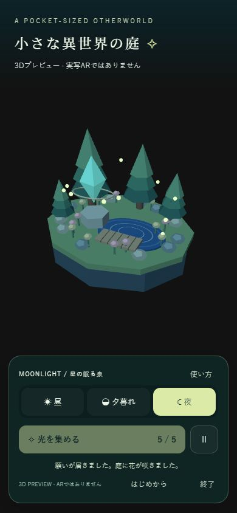

現実の机に、光と時間が息づく小さな世界。
スマートフォンのブラウザでカメラ映像を表示し、自作マーカーを認識すると、その位置に小さなファンタジーの庭を重畳するWeb ARアプリケーションを制作した。浮島の草地、木、池、木橋、浮遊結晶をローポリゴンの3D形状で構成した。
「庭を鑑賞する」だけでなく、光を5つ集めて花を咲かせる小さな操作を加えた。昼・夕暮れ・夜を切り替え、同じ場所でも異なる時間の雰囲気を楽しめる。
https://kou1030.github.io/ar-garden/
ソース：https://github.com/kou1030/ar-garden
A-FrameとAR.jsを用い、マーカーの子要素としてCGを配置した。結晶の回転・浮遊、池の波紋、光の上下動で動きを表現する。昼夜切替ではCGの照明と池の色を変える。映像は端末内で処理し、録画・送信しない。外部モデルや有料サービスは使用していない。

図1：ブラウザ上の3Dプレビュー（夜・開花）。実写ARの動作画面ではない。
図2：「庭の扉」。芽と結晶を非対称に組み合わせた白黒の自作図柄。内側図柄と黒枠の比率は0.5。16×16画素・BGR・4方向の認識データをgarden.pattに格納した。黒枠の外寸約10 cm、白余白を残して使用する。
実機カメラでの動作は未確認。以下に実際のカメラ映像とCGが重なった画像を追加し、検証結果を記入する。
実機スクリーンショットの追加欄
架空のAR画像は使用していません。
確認日：［入力］
端末・OS・ブラウザ：［入力］
結果：［マーカー認識、重畳、追従、昼夜切替、開花、再認識を記録］
JavaScript構文、ブラウザ上の3D描画、時間帯切替、開花、リセットを確認した。同梱PNGを入力した静止画認識テストでmarkerFoundを確認した。ただし、このテストは実機カメラでの追従確認を代替しない。画面回転、認識距離・角度、長時間使用時の動作は実機確認が必要である。
参考：A-Frame 1.6.0（aframe.io）、AR.js 3.4.7（github.com/AR-js-org/AR.js）、AR.js Marker Based Documentation、授業資料「空間情報コンピューティング 第6回」。制作補助に生成AIを利用。CG形状・マーカー図柄は本作向けに制作。